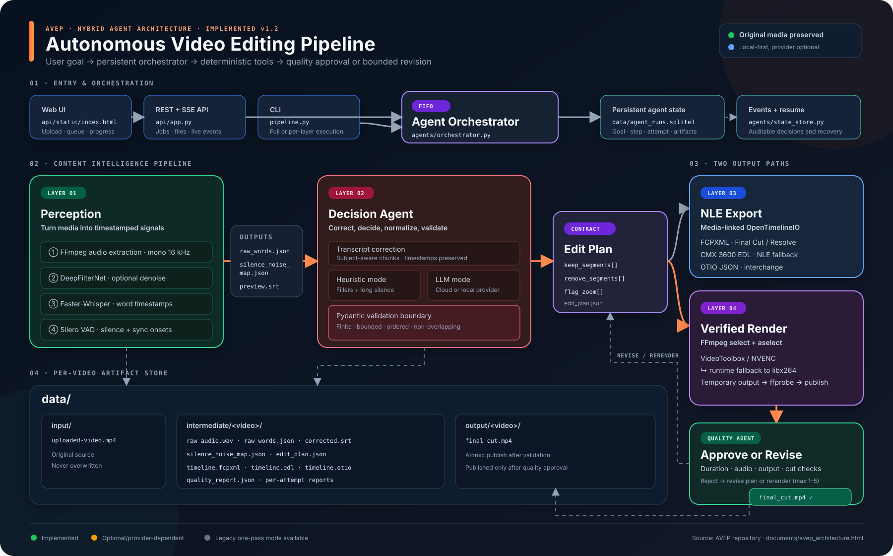

A 4-layer agentic system that separates content intelligence from media processing — turning raw footage into a validated rough cut while preserving the original source file.
| Function | Primary Tool | Strategy | Layer |
|---|---|---|---|
| Transcription | Faster-Whisper | Local · Offline | Layer 1 |
| Silence / VAD | Silero VAD | Local · Offline | Layer 1 |
| Noise Reduction | DeepFilterNet | Local · Offline | Layer 1 |
| Decision Logic | Claude / OpenAI / Gemini / Ollama | Cloud or Local | Layer 2 |
| Timeline Assembly | OpenTimelineIO + adapters | Local · Offline | Layer 3 |
| Final Render | FFmpeg | Local · GPU-Heavy | Layer 4 |
Follow the implemented path from web and CLI entry points through perception and validated decisions, then into media-linked NLE exports or the verified FFmpeg render.

Imagine a robot that watches your video, decides what to keep, and hands a perfect edit to a professional video machine — all automatically.
You drop in a raw recording. AVEP transcribes, analyzes, validates, exports timelines, and produces a separate rough-cut MP4 while leaving the original source untouched.
Complete technical breakdown of each layer, data contracts, toolchain specs, and integration points for engineers building or extending AVEP.
The core pipeline is implemented. These original layer assignments now serve as a roadmap: reliability work is active, while deterministic duplicate detection, applied zoom effects, persistent jobs, and optional Resolve automation remain planned.
perception_output.jsonpip install faster-whisper silero-vad torchperception_output.jsonedit_plan.json (keep/remove/zoom segments).envpip install openai google-genai python-dotenvedit_plan.json.fcpxml for Resolve and .edl for NLE fallbackpip install opentimelineio{kind=link}
{kind=link}